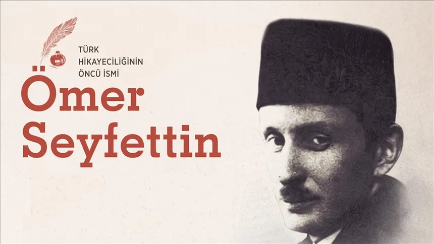
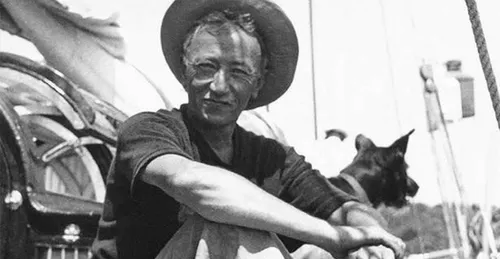

Hikaye yaşanmış ya da yaşanması mümkün olayları, kişi, yer ve zamana bağlı olarak anlatan kısa bir yazı türüdür. Genellikle tek bir olay çevresinde gelişir ve romana göre daha kısadır.

Olay hikâyesinin tanınmış örneklerinden olan Kaşağı, dürüstlük ve vicdan azabı temalarını işler. Hikayeyi okumak için tıklayın

Semaver, gündelik yaşamdan kesitleri ve insan ilişkilerini öne çıkaran bir durum hikâyesi örneğidir Semaver hikâyesini okumak için tıklayın